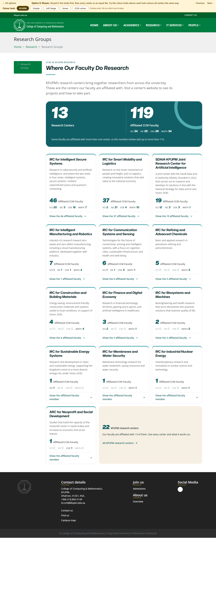
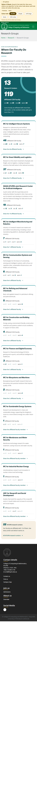
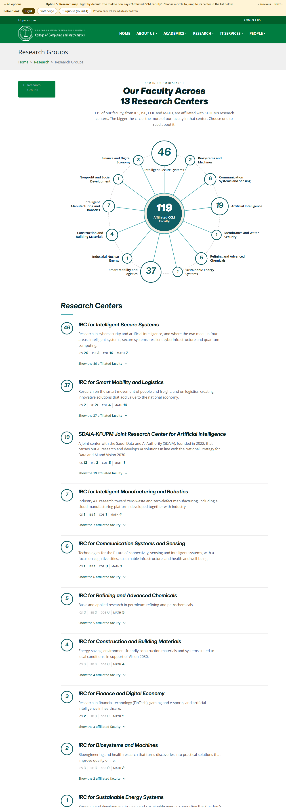
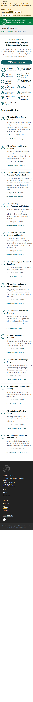
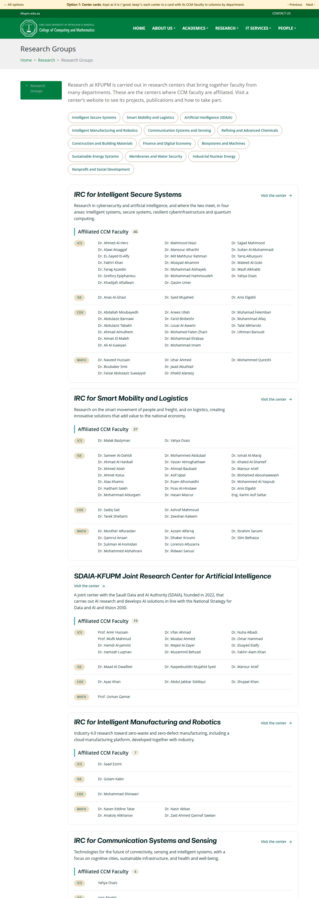
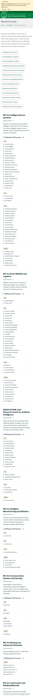

Your round 5 notes, applied. The mosaic is reorganised: the two totals first, then every center as an equal tile. "119" now clearly means our faculty affiliated with research centers, not all CCM faculty. The map and the center cards are kept as they were, for your manager. Compare with today's page.
What Changed
- The wording: "119 CCM faculty" became "119 Affiliated CCM Faculty" on the map and in the mosaic. Each center says "46 Affiliated CCM Faculty" (option 1's heading uses the same words), and the buttons say "Show the 46 affiliated faculty".
- The mosaic starts with the totals: 13 Research Centers and 119 Affiliated CCM Faculty (ICS 34, ISE 25, COE 26, MATH 34, each person counted once). A short note explains why the center numbers add up to more than 119: some faculty are in two or three centers.
- All centers are equal now: same size, same colour, in the same order as before (most affiliated faculty first). No center is highlighted over another.
- The colour looks are kept: each look now colours the totals band and all the tiles the same way. Every tile also gets the same thin colour line on top.
-


Option 6 · reorganised
Mosaic
The two totals in a band, then the 13 centers as equal tiles, each with its affiliated faculty and the names on click. A last tile links to all 22 KFUPM research centers.
- Looks
- KFUPM (the default) · Simple · Soft beige · Green · CCM colour
- Good to know
- Green matches the current site's green header. In CCM colour, our college colour is the totals band, with dark text, as the brand book allows.
-


Option 5 · kept (light)
Research map
The 119 Affiliated CCM Faculty in the middle, and the 13 centers around them, sized by how many of our faculty are in each. Below the map is the list of centers with the same circles.
- Looks
- Light (the default) · Soft beige · Turquoise
- Watch out
- The ring is set for 13 centers. If a center is added, the design needs a small update. On phones it becomes a simple list.
-


Option 1 · kept
Center cards
Each center in a card with all its Affiliated CCM Faculty in columns by department.
- Good for
- Simple, complete and easy to read.
- Watch out
- The longest page, because every name is shown.


Things to Know
- The order of the centers: most affiliated faculty first, the same on all three options. If you prefer A to Z, so the order says nothing about size, that is a quick change.
- Mix and match: for example, the map on top and the mosaic's totals and tiles below it.
- In Sitefinity: no pop-ups, so a Content block works. The names open with
<details>, which we already tested there.